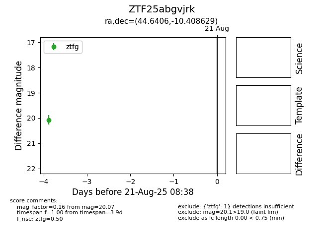

Target ZTF25abgvjrk at 2025-08-21 08:38, see:
FINK: fink-portal.org/ZTF25abgvjrk
Lasair: lasair-ztf.lsst.ac.uk/objects/ZTF25abgvjrk
ALeRCE: alerce.online/object/ZTF25abgvjrk
alt names
ZTF25abgvjrk (ztf,alerce)
coordinates:
equatorial (ra, dec) = (44.6406,-10.40863)
galactic (l, b) = (189.8791,-55.73887)
photometry
last ztfg=20.07
1 ztfg detections
